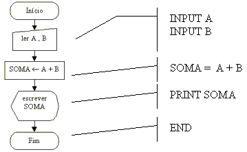

Estudando o Qbasic
Aula 4
Até a aula 3 tínhamos um problema e a partir dele desenvolvínhamos o código em Qbasic, porém este procedimento somente é viável para programas de estrutura muito simples e curta; no caso de programas mais complexos o processo mais viável é o desenvolvimento da lógica através do uso de fluxogramas ou algoritmos(veja o curso de lógica de programação), onde será mais fácil a análise e a depuração dos erros.
A programação de computadores pode ser resumida da seguinte maneira:
Cara aluno, com tudo na vida, a persistência é fundamental para o aprendizado da programação; nunca desistir de solucionar um problema é o segredo, somente o exercício da programação diminuirá as dificuldades; estar bem informado sobre o problema e sobre os meios necessários para resolvê-lo é fundamental. O programador precisa ser um constante pesquisador tanto dos recursos da linguagem quanto dos métodos de programação.
A partir de agora iremos constantemente utilizarmos do curso de lógica de programação, codificando seus exercícios, mas também utilizaremos exercícios novos.
Obs.: Se você não estudou o curso de lógica, poderá fazê-lo simultaneamente, estude-o até o ponto em que estamos a utilizar e o desenvolva de acordo com a necessidade do curso Qbasic.
O primeiro exercício de codificação é a soma de dois número entrados pelo usuários.

Observe que o princípio é muito simples, associamos a cada símbolo o comando da linguagem que corresponde a função do símbolo.
Como utilizamos um programa muito simples isto parece um processo desnecessário, mas como comentamos antes, sua importância cresce junto com a complexidade do programa.
Como exercício, analise e responda o que faz o fluxograma abaixo, depois codifique-o em Qbasic. Clique sobre a figura para obter a resposta.